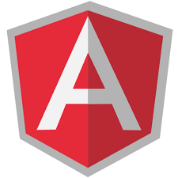
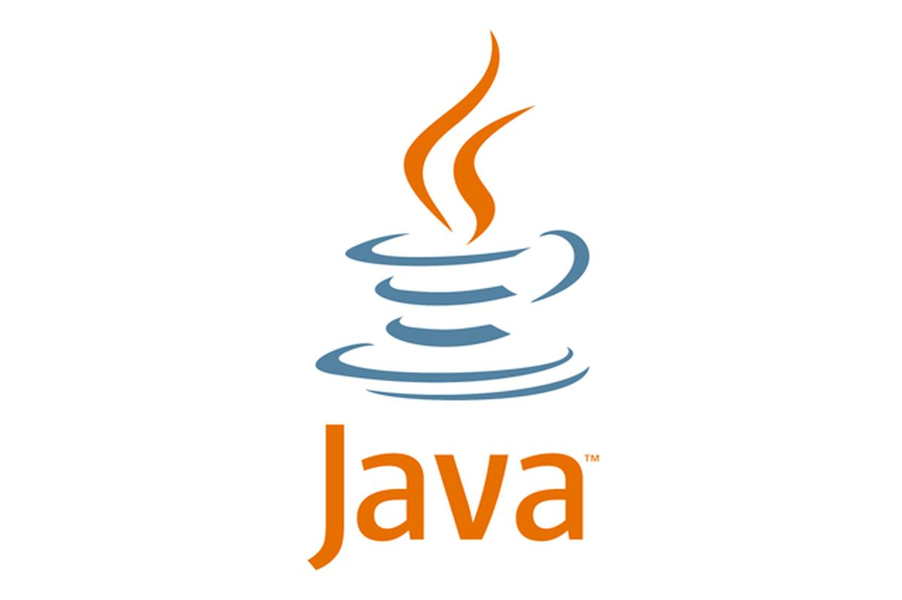

¿Qué es la Estructura Cliente-Servidor?
Consiste en 2 computadoras que se comunican, uno como cliente y el otro como servidor.
CLIENTE: Es un programa ejecutable, que activamente envia solicitudes o peticiones a un servidor, y espera la respuesta de este.
SERVIDOR: Es un programa que ofrece diferentes servicios, su función es aceptar las peticiones de la red y devolver los resultados al cliente, esto dependiendo si cumple con las condiciones necesarias.
FRONTEND
¿Qué es el FrontEnd
Es todo lo relacionado a lo que ven las personas, como lo es principalmente el diseño de una página, es decir, lo que ve el usuario
¿Cuales son los roles?
- DISEÑADOR UI
- MAQUETADOR
- PROGRAMADOR FRONTEND
¿Cual es la función de cada rol?
- DISEÑADOR UI
- MAQUETADOR
- PROGRAMADOR FRONTEND
Es el que se encarga de diseñarlso flujos de usuario, las pantallas e interacciones en un programa de diseño
Es el encargado de llevar las pantallas diseñadas por el diseñador a HTML y CSS. No se debe de procupar de la lógica, solo de la presentación
Agrega datos realies desde una API y lógica a la presentación creada por el MAQUETADOR. Es sumamente importante que tenga conocimientos solidos de JavaScript. No se debe por el diseño, su unica función es programarlo.
¿Cuales son los principales lenguajes y frameworks?
El principal lenguaje es Javascript, y que otros son usados son HTML5 y CSS, los cuales sirven para moldear la página
ANGULAR JS:
Fue el primer framework importante para el trabajo en frontend, este funciona mediante directivas, las cuales indicaban que se debia de hacer
BACKEND
¿Qué es el BackEnd
Es todo lo relacionado a la parte funcional de una página, principalmente el codigo de esta, la cual la hace funcionar.
¿Cuales son los roles?
- BACKEND DEVELOPER
- DATABASE ADMINISTRATOR
- ADMINISTADOR DEL SERVIDOR
¿Cual es la función de cada rol?
- BACKEND DEVELOPER
- DATABASE ADMINISTRATOR
- ADMINISTADOR DEL SERVIDOR
Es el encargado de conectarse a la Base de Datos mediante diversas aplicaciones, y de esta forma mandar información al frontend.
Ademas debe crear las logicas del negocio, de forma ya funcional.
Otra de las funciones es encargarse la seguirdad de la pagina, mediante limpieza de formularios y encriptar información.
Diseñar, implementar, mejorar y mantener el sistema de base de datos, mediante diversas apliaciones. Principalmente debe de tener conocimiento de Sql.
Es quien lleva la produccion de la pagian, haciendola acccesible a todo el publico.
Su principal funcion es gestionar,onstalar, dar soporte y mantener el servidor de la pagina.
¿Cuales son los principales lenguajes y frameworks?
GO

Uno de los lenguajes de BackEnd es "GO", su principal ventaja es que devuelve como resultado un binario, sin la necesidad de tener una maquina virtual o alguna herramienta extra.
JAVA
Otro clasico es Java, este lenguaje es fuerte en el entorno empresarial, es de los más usados en el apartado del BackEnd.
Python

Python es otro lenguaje usado como desarrollo web para Backend, ademas de contar con más funcionalidades.
¿Qué es Stack?
Concierne al desarrollo informático completo que abarca el Front-end, el Back-end y el código de software que conecta a ambos.
Por suerte, un solo un profesional podría estar capacitado para hacer las dos cosas y se denomina Programador Full Stack.
Quien cumple con este perfil informático tiene habilidades y experiencia para administrar el proyecto completo.
Desarrolla el código ideado para integrar los dos sistemas, así como también la creación de las partes visibles que las personas verán cuando interactúen con la página